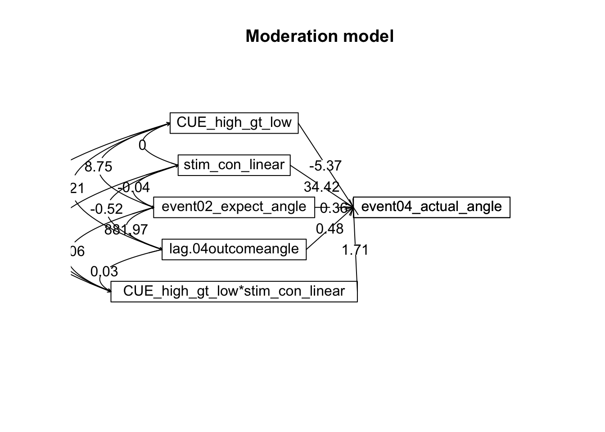

Chapter 9 [beh] Mediation outcome ~ cue * stim * expectrating * n-1outcomerating
helpful resources
https://nmmichalak.github.io/nicholas_michalak/blog_entries/2018/nrg01/nrg01.html
## What is the purpose of this notebook? {.unlisted .unnumbered}
Here, I model the outcome ratings as a function of cue, stimulus intensity, expectation ratings, N-1 outcome rating.
* As opposed to notebook 15, I want to check if the demeaning process should be for runs as opposed to subjects.
* In other words, calculate the average within run and subtract ratings
* Main model: lmer(outcome_rating ~ cue * stim * expectation rating + N-1 outcomerating)
* Main question: What constitutes a reported outcome rating?
* Sub questions:
- If there is a linear relationship between expectation rating and outcome rating, does this differ as a function of cue?
- How does a N-1 outcome rating affect current expectation ratings?
- Later, is this effect different across tasks or are they similar?
- IV: stim (high / med / low) cue (high / low) expectation rating (continuous) N-1 outcome rating (continuous)
- DV: outcome rating
Some thoughts, TODOs
- Standardized coefficients
- Slope difference? Intercept difference? ( cue and expectantion rating)
- Correct for the range (within participant) hypothesis:
- Larger expectation leads to prediction error
- Individual differences in ratings
- Outcome experience, based on behavioral experience What are the brain maps associated with each component.
load data and combine participant data
## event02_expect_RT event04_actual_RT event02_expect_angle event04_actual_angle
## Min. :0.6504 Min. :0.0171 Min. : 0.00 Min. : 0.00
## 1st Qu.:1.6200 1st Qu.:1.9188 1st Qu.: 29.55 1st Qu.: 37.83
## Median :2.0511 Median :2.3511 Median : 57.58 Median : 60.49
## Mean :2.1337 Mean :2.4011 Mean : 61.88 Mean : 65.47
## 3rd Qu.:2.5589 3rd Qu.:2.8514 3rd Qu.: 88.61 3rd Qu.: 87.70
## Max. :3.9912 Max. :3.9930 Max. :180.00 Max. :180.00
## NA's :651 NA's :638 NA's :651 NA's :6419.1 mediation
Code
psych::mediate(event04_actual_angle ~ CUE_high_gt_low*stim_con_linear+ event02_expect_angle + lag.04outcomeangle, data = pvc, n.iter = 1000) %>% print(short = FALSE) 
##
## Mediation/Moderation Analysis
## Call: psych::mediate(y = event04_actual_angle ~ CUE_high_gt_low * stim_con_linear +
## event02_expect_angle + lag.04outcomeangle, data = pvc, n.iter = 1000)
##
## The DV (Y) was event04_actual_angle . The IV (X) was CUE_high_gt_low stim_con_linear event02_expect_angle lag.04outcomeangle CUE_high_gt_low*stim_con_linear . The mediating variable(s) = .Call: psych::mediate(y = event04_actual_angle ~ CUE_high_gt_low * stim_con_linear +
## event02_expect_angle + lag.04outcomeangle, data = pvc, n.iter = 1000)
##
## No mediator specified leads to traditional regression
## event04_actual_angle se t df Prob
## Intercept 0.00 0.30 -0.01 5023 9.89e-01
## CUE_high_gt_low -5.37 0.71 -7.54 5023 5.62e-14
## stim_con_linear 34.42 0.75 46.13 5023 0.00e+00
## event02_expect_angle 0.36 0.01 33.69 5023 1.84e-224
## lag.04outcomeangle 0.48 0.01 46.08 5023 0.00e+00
## CUE_high_gt_low*stim_con_linear 1.71 1.49 1.14 5023 2.53e-01
##
## R = 0.83 R2 = 0.68 F = 2177.74 on 5 and 5023 DF p-value: 09.2 mediation 2
Code
mod1 <- "# a path
#thirst ~ a * room_temp
event02_expect_angle ~ a * CUE_high_gt_low
# b path
#consume ~ b * thirst
event04_actual_angle ~ b* event02_expect_angle
# c prime path
#consume ~ cp * room_temp
event04_actual_angle ~ cp * CUE_high_gt_low
# indirect and total effects
ab := a * b
total := cp + ab"Code
library(lavaan)## This is lavaan 0.6-17
## lavaan is FREE software! Please report any bugs.##
## Attaching package: 'lavaan'## The following object is masked from 'package:psych':
##
## cor2covCode
fsem1 <- sem(mod1, data = pvc, se = "bootstrap", bootstrap = 1000)## Warning in lav_model_nvcov_bootstrap(lavmodel = lavmodel, lavsamplestats =
## lavsamplestats, : lavaan WARNING: 256 bootstrap runs failed or did not
## converge.Code
summary(fsem1, standardized = TRUE)## lavaan 0.6.17 ended normally after 1 iteration
##
## Estimator ML
## Optimization method NLMINB
## Number of model parameters 5
##
## Used Total
## Number of observations 4621 5029
##
## Model Test User Model:
##
## Test statistic 0.000
## Degrees of freedom 0
##
## Parameter Estimates:
##
## Standard errors Bootstrap
## Number of requested bootstrap draws 1000
## Number of successful bootstrap draws 744
##
## Regressions:
## Estimate Std.Err z-value P(>|z|) Std.lv Std.all
## event02_expect_angle ~
## CUE_hgh__ (a) 34.622 1.059 32.695 0.000 34.622 0.429
## event04_actual_angle ~
## evnt02_x_ (b) 0.674 0.013 51.662 0.000 0.674 0.715
## CUE_hgh__ (cp) -15.034 0.943 -15.936 0.000 -15.034 -0.198
##
## Variances:
## Estimate Std.Err z-value P(>|z|) Std.lv Std.all
## .evnt02_xpct_ng 1328.872 32.424 40.984 0.000 1328.872 0.816
## .evnt04_ctl_ngl 825.688 21.676 38.092 0.000 825.688 0.571
##
## Defined Parameters:
## Estimate Std.Err z-value P(>|z|) Std.lv Std.all
## ab 23.321 0.854 27.311 0.000 23.321 0.307
## total 8.287 1.153 7.188 0.000 8.287 0.109Code
parameterestimates(fsem1, boot.ci.type = "bca.simple", standardized = TRUE) %>%
kable()| lhs | op | rhs | label | est | se | z | pvalue | ci.lower | ci.upper | std.lv | std.all | std.nox |
|---|---|---|---|---|---|---|---|---|---|---|---|---|
| event02_expect_angle | ~ | CUE_high_gt_low | a | 34.6222421 | 1.0589323 | 32.695425 | 0 | 32.5381074 | 36.8315576 | 34.6222421 | 0.4289292 | 0.8579540 |
| event04_actual_angle | ~ | event02_expect_angle | b | 0.6735862 | 0.0130382 | 51.662357 | 0 | 0.6389107 | 0.6943671 | 0.6735862 | 0.7148784 | 0.7148784 |
| event04_actual_angle | ~ | CUE_high_gt_low | cp | -15.0337345 | 0.9433923 | -15.935825 | 0 | -16.8526515 | -13.2346722 | -15.0337345 | -0.1976680 | -0.3953800 |
| event02_expect_angle | ~~ | event02_expect_angle | 1328.8715236 | 32.4239609 | 40.984244 | 0 | 1258.5450975 | 1388.0485222 | 1328.8715236 | 0.8160197 | 0.8160197 | |
| event04_actual_angle | ~~ | event04_actual_angle | 825.6875657 | 21.6759152 | 38.092397 | 0 | 784.8224538 | 874.9438625 | 825.6875657 | 0.5710990 | 0.5710990 | |
| CUE_high_gt_low | ~~ | CUE_high_gt_low | 0.2499443 | 0.0000000 | NA | NA | 0.2499443 | 0.2499443 | 0.2499443 | 1.0000000 | 0.2499443 | |
| ab | := | a*b | ab | 23.3210633 | 0.8539010 | 27.311202 | 0 | 21.5371219 | 25.0046717 | 23.3210633 | 0.3066322 | 0.6133328 |
| total | := | cp+ab | total | 8.2873288 | 1.1529270 | 7.188078 | 0 | 6.0810341 | 10.5875605 | 8.2873288 | 0.1089642 | 0.2179528 |
9.3 mediation 3: Test same model using mediation() from MBESS
## Warning in resid.Y.on.X + resid.Y.on.M: longer object length is not a multiple
## of shorter object length## Warning in resid.Y.on.X + resid.Y.on.M - resid.Y.on.X.and.M: longer object
## length is not a multiple of shorter object length## Warning in standardized.resid.Y.on.X + standardized.resid.Y.on.M: longer object
## length is not a multiple of shorter object length## Warning in standardized.resid.Y.on.X + standardized.resid.Y.on.M -
## standardized.resid.Y.on.X.and.M: longer object length is not a multiple of
## shorter object length## Warning in abs(e.1M) + abs(e.1Y): longer object length is not a multiple of
## shorter object length## Warning in abs(standardized.e.1M) + abs(standardized.e.1Y): longer object
## length is not a multiple of shorter object length## [1] "Bootstrap resampling has begun. This process may take a considerable amount of time if the number of replications is large, which is optimal for the bootstrap procedure."## Estimate CI.Lower_BCa CI.Upper_BCa
## Indirect.Effect 23.32106331 NA NA
## Indirect.Effect.Partially.Standardized 0.61326642 NA NA
## Index.of.Mediation 0.30663221 NA NA
## R2_4.5 -0.02001083 NA NA
## R2_4.6 0.07764679 NA NA
## R2_4.7 0.18103664 NA NA
## Ratio.of.Indirect.to.Total.Effect 2.81406275 NA NA
## Ratio.of.Indirect.to.Direct.Effect -1.55124885 NA NA
## Success.of.Surrogate.Endpoint 0.23936430 NA NA
## Residual.Based_Gamma NA NA NA
## Residual.Based.Standardized_gamma NA NA NA
## SOS -1.68537707 NA NA